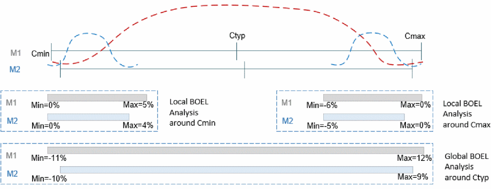
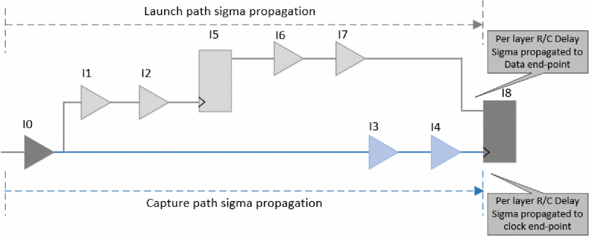

Performing Wire Variation Analysis
The following setting enables wire variation analysis in path-based analysis mode:
set timing_enable_wire_variation true
By default, the clock path PBA is disabled in Tempus. To model wire variation on clock paths, you can enable clock PBA using the following setting:
set timing_disable_retime_clock_path_slew_propagation false
The wire variation analysis can be run to model local as well as global RC variations. Consider the following illustration:
Figure -128 Wire variation analysis illustration

In the above example, there can be two use models:
-
Local variation: Consider the blue curves above, where wire variation analysis can be run at Cmin or Cmax corners, and metal layers' mean-shift and standard deviation can be accordingly defined by assuming the specified range to be +/-n*sigma.For local variation analysis around Cmin corner:
M1 mean-shift = (0% + 5%)/2 = 2.5%
M1 stddev = (5% - 0%)/6 = 0.83%
M2 mean-shift = (0% + 4%)/2 = 2%
M2 stddev = (4% - 0%)/6 = 0.67% -
Global variation: Consider the red curve above, where wire variation analysis can be run at Ctyp, and metal layers' mean-shift and standard deviation can be accordingly defined by assuming the specified range to be +/-n*sigma.
For global variation analysis around Ctyp corner:
M1 mean-shift = (-11% + 12%)/2 = 0.5%
M1 stddev = (12% - (-11%))/6 = 3.83%
M2 mean-shift = (-10% + 9%)/2 = -0.5%
M2 stddev = (9% - (-10%))/6 = 3.17%
The following steps outline the internal working of Tempus to compute wire variation-aware timing slacks:
- Compute delay sensitivities (sigma) of each stage with respect to resistance and capacitance of each metal layer.
-
Propagate R/C sensitivities per layer separately across launch and capture paths.
- Resistance/capacitance delay variations within a layer across all stages are assumed to be fully correlated, that is, the delay sigma is linearly added for the same layer of R or C.
Figure -129

-
The timing slack is computed by combining the delay sensitivities across different components for launch and capture:
-
The R and C of the same layer are combined based on the correlation factor specified by the user, to get the combined delay sensitivities for each layer:
set_wire_variation_mode -rc_correlation_factor < -1 | 1 >
With '-1', R and C of same layer are considered as inversely correlated and with '1', then R and C of the same layer are considered as fully correlated. -
Combined slack wire sensitivity across layers is then computed based on the correlation mode specified by the user:
set_wire_variation_mode -correlation_type <statistical | binomial>
-
The R and C of the same layer are combined based on the correlation factor specified by the user, to get the combined delay sensitivities for each layer:
The subsequent sections explain the statistical and binomial modes.
Return to top